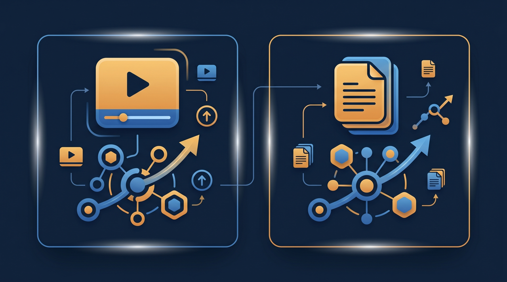
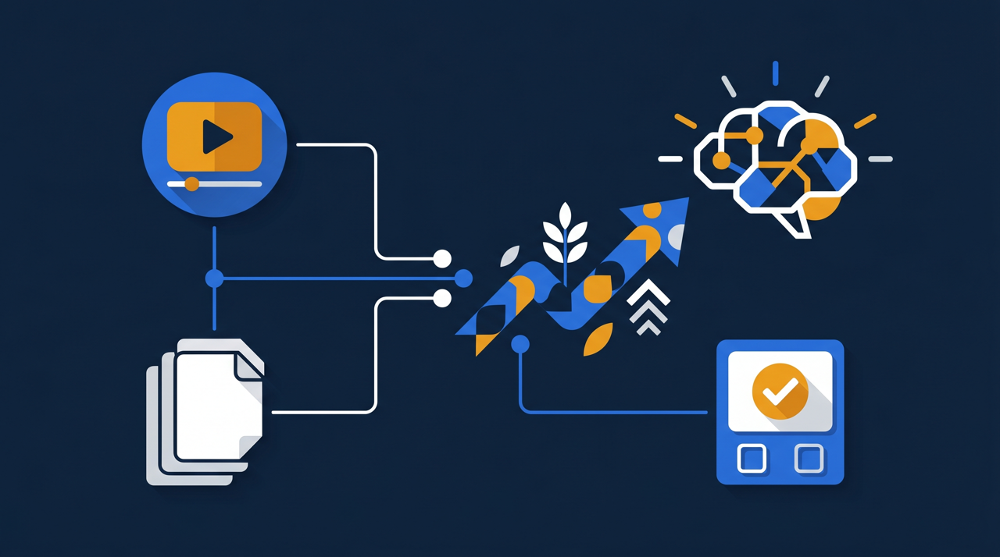

「マニュアルは作ったのに、誰も見てくれない」——そんな声をよく聞きます。せっかく時間をかけて作った分厚い文書が、棚の奥でほこりをかぶっている。一方で、スマートフォンで撮った数分の動画なら、新人がすすんで見返している。この違いはどこから来るのでしょうか。この記事では、文書マニュアルと動画マニュアルの違いを整理し、動画にすると定着率が上がりやすい理由と、作り方のコツを現場目線でお伝えします。

動画マニュアルとは？まず言葉を整理する
動画マニュアルとは、作業の手順やコツを、映像と音声で記録して見せる教材のことです。紙やPDFに文字とイラストで書く文書マニュアルに対して、実際にやっている様子をそのまま動画で残す点が大きな違いになります。
ここで一度、立ち止まって考えてみたいことがあります。そもそもマニュアルは、何のために作るのでしょうか。きれいな資料を残すためではなく、「次に同じ作業をする人が、迷わず再現できるようにするため」ですよね。この目的に立ち返ると、文書と動画のどちらが向いているかは、伝えたい中身によって変わってくることが見えてきます。
たとえば、調理の現場で「フライパンを軽くあおる」という動作を文章で書こうとすると、なかなか難しいんです。「手首のスナップを使い、具材が手前から奥へ転がるように」と書いても、読んだ人が同じ動きを再現できるとは限りません。ところが、ベテランが実際にあおっている数秒の映像を見せれば、力加減も角度も一目で伝わります。動作やコツのように、言葉にしづらい要素ほど、動画の強みが出るわけです。
一方で、何でも動画にすればよいわけでもありません。「在庫が10個を下回ったら発注する」「この書類は3年間保管する」といった数値や規定は、文章のほうが後から検索しやすく、確認も速い。つまり、動画マニュアルは文書マニュアルを置き換えるものではなく、得意分野が違う別の道具だと捉えるのが、現場でうまく使うコツになります。
なぜ文書マニュアルは読まれないのか
「マニュアルを整備したのに現場が変わらない」という相談は、本当に多いものです。原因を一つずつ見ていくと、文書マニュアルが抱えやすい弱点が浮かび上がってきます。
1. 動作やコツが文字に落ちきらない
先ほどのフライパンの例のように、体で覚える要素は文章化が難しいんです。書き手も「これは言葉では伝わりにくいな」と感じながら書いているので、肝心なコツほど抜け落ちる。結果として、マニュアルを読んでも「で、実際どうやるの?」という疑問が残り、結局ベテランに聞きに行くことになります。
2. 読む手間が、見る手間より大きい
忙しい現場で、数十ページの文書を最初から読み込む時間を取れる人はそう多くありません。文字を追って頭の中で動きを組み立てる作業は、思っている以上に負担が大きいものです。「読めば分かる」はずのマニュアルが、「読むのが面倒だから後回し」になりやすい。これが、棚で眠ってしまう大きな理由です。
3. 更新されず、現場とズレていく
文書マニュアルは、一度作るとなかなか直されません。レイアウトを崩さずに修正するのは手間がかかりますし、印刷物だと差し替えも面倒です。やがて手順が変わっても文書が古いままになり、「マニュアルと現場が違う」状態になる。そうなると現場は文書を信用しなくなり、ますます読まれなくなっていきます。
実際にあった話として、ある物流倉庫では、ピッキング作業の手順書がきちんと整備されていました。けれど新人の多くは、最初の数ページを読んだだけで現場に出て、結局は先輩の背中を見ながら覚えていたそうです。文書が悪かったわけではありません。「文字を読んで動きを再現する」というやり方そのものが、その作業には合っていなかったわけです。
動画マニュアルのメリットを整理する
では、動画にすると何が変わるのか。文書との違いを意識しながら、動画マニュアルのメリットを整理してみます。
- 手の動き・力加減・速さなど、文字にしにくい要素がそのまま伝わる
- 見る側の負担が軽く、すすんで視聴されやすい
- 何度でも巻き戻せるので、ベテランに同じ質問を繰り返さずに済む
- 撮り直し・差し替えがしやすく、現場の変化に合わせて更新しやすい
- 一度作れば全拠点・全新人に同じ内容を届けられ、教える品質が揃いやすい
特に効いてくるのが、「何度でも見返せる」という点です。OJTで一度教わっただけだと、人はかなりの部分を忘れてしまいます。けれど動画があれば、分からなくなったその場で巻き戻して確認できる。教わる側は「もう一回聞くのは申し訳ない」という遠慮から解放され、教える側は同じ説明を繰り返す手間から解放される。両方の負担が同時に減るのは、動画ならではの利点です。
もう一つ見逃せないのが、教える品質を揃えやすいことです。文書の場合、書き手の表現力に内容が左右されますし、口頭のOJTなら教える人ごとにバラついてしまう。動画なら、一番うまい人のやり方を撮って全員に見せられるので、誰が教わっても同じ水準からスタートできます。多店舗や多拠点で人を育てている会社ほど、この「揃えられる」メリットは大きく感じられるはずです。厚生労働省の能力開発基本調査でも、人材育成の課題として「指導する人材の不足」や「育成にかける時間の不足」が繰り返し挙げられていますが、動画はその両方を軽くする方向に働きます。
動画と文書を比較すると、向き不向きが見える
ここで、動画マニュアルと文書マニュアルを並べて比べてみましょう。どちらかが万能ということはなく、伝えたい中身によって得意・不得意が分かれます。
| 観点 | 動画マニュアル | 文書マニュアル |
|---|---|---|
| 動作・コツの伝達 | 力加減や速さがそのまま伝わりやすい | 文字では再現しにくいことが多い |
| 数値・規定の確認 | 探しにくく、確認に時間がかかりがち | 検索でき、後から確認しやすい |
| 見る・読む負担 | 軽く、すすんで視聴されやすい傾向 | 重く、後回しにされやすい傾向 |
| 作成の手間 | 撮影は速いが、整える工程が要る | レイアウト含め作り込みに時間がかかる |
| 更新のしやすさ | 撮り直し・差し替えがしやすい | 修正が手間で古くなりやすい |
この表を見ると、両者は対立するものではなく、補い合う関係だと分かります。たとえば「全体の流れと動作は動画で見せ、細かい数値や例外条件は文書で補う」という併用がしやすい。実際、ある飲食チェーンでは、調理の手順を動画にしつつ、アレルギー対応や保管温度といった「絶対に間違えてはいけない数値」は別途の一覧表で管理していました。動画で雰囲気と動きをつかみ、数値は表で確認する。この役割分担がはまると、教育の抜けが減っていきます。
ところで、文書マニュアルがすでにある会社は、それを捨てる必要はありません。むしろ、既存の文書は動画の台本として使えます。手順が整理されている分、何を撮るかが明確になり、撮影がスムーズに進むことが多いんです。文書化の積み重ねは、動画化の土台として十分に活きてきます。
定着率を上げる動画マニュアルの作り方
動画にすれば自動的に定着率が上がる、というわけではありません。「見て終わり」の動画は、文書と同じように流し見されて終わってしまいます。定着につなげるには、いくつか押さえておきたい工夫があります。
1本に詰め込みすぎない
ありがちなのが、1本の動画に作業を全部詰め込んでしまうことです。30分の長い動画は、途中で集中が切れますし、後から「あの部分だけ見たい」というときに探すのが大変になります。1本につき作業や論点を1つに絞り、短く区切る。長い作業なら工程ごとに分けておくと、必要な場面だけを選んで見返せるようになります。
コツや理由を言葉で添える
ただ作業を撮るだけでは、「何をしているか」は分かっても「なぜそうするのか」が伝わりません。撮影しながら、あるいは後からテロップで、「ここでいったん止めるのは、後の工程で○○を防ぐため」といった理由を添えると、応用がきく理解につながります。理由が分かると、想定外の場面でも自分で考えて動けるようになるんですよね。
見たあとに確認テストをつなげる
これが定着の分かれ目になります。動画を見せたら、簡単な確認テストで理解度を測る。間違えた箇所が分かれば、その部分を見直してもらう。「見る→試す→直す」の流れができると、学んだことが業務で再現されやすくなります。見ただけで分かったつもりになる状態を防ぐ、という意味でも、確認テストは効いてきます。

完璧を最初から目指さない
最初の1本は、粗くて当たり前です。照明が暗くても、声が少し聞き取りにくくても、まず撮って共有してみる。使ってみて「ここが分かりにくい」という声が出たら、その部分だけ撮り直す。作り込みに時間をかけて公開が遅れるより、粗くても早く回し始めるほうが、結果的に良い教材に育っていくことが多いものです。
動画マニュアルを「組織の資産」にする
ここまでの工夫で良い動画が作れても、それがバラバラに保管されていては、効果が半減します。個人のスマートフォンや、あちこちのチャットに散らばった動画は、いざ見たいときに「どこにあるか分からない」状態になりがちです。せっかく形にしたノウハウが、また探せなくなってしまう。
そこで効いてくるのが、学習管理システム(LMS)に動画を集約することです。動画・文書・確認テストを1か所にまとめ、誰がどこまで見たかを記録できるようにすると、教育が「あの人がいるかどうか」ではなく「仕組みがあるかどうか」で回るようになります。新人が入るたびに、まず見るべき動画が決まっていて、進み具合も把握できる。教える側は、進んでいない人にだけ声をかければよくなり、管理の手間がぐっと軽くなります。
そしてもう一つ、記録が残ることには別の意味もあります。誰がいつ何を学んだかが残っていると、研修を実施した証明がしやすくなる。たとえば人材開発支援助成金のように、訓練の実施を裏づける書類が求められる制度を活用する場面でも、受講記録が整理されていると手続きが進めやすくなります。動画マニュアルを単なる教材で終わらせず、組織の資産として運用していく——この発想が、長く効かせるための鍵になります。
なお、動画マニュアルづくりは、作る過程そのものにも価値があります。ベテランの作業を撮り、「なぜこの順番なのか」を聞いていくと、本人も自分のやり方を改めて言葉にできることが少なくありません。マニュアル化は、ノウハウを外に出すだけでなく、そのノウハウを磨き直す機会にもなっているわけです。
まとめ：動画と文書を使い分け、定着まで設計する
文書マニュアルが読まれないのは、書き方が悪いからとは限りません。動作やコツのように、文字では伝わりにくい中身を、無理に文章に押し込めていることが原因になっている場合が多いんです。動画マニュアルは、その「文字にしにくい部分」をそのまま見せられるので、見る負担が軽く、すすんで視聴されやすい傾向があります。
ただし、動画にすれば自動的に定着するわけではありません。1本1テーマに絞り、理由を言葉で添え、確認テストまでつなげる。そして、できた動画を学習管理システムに集約し、誰がどこまで学んだかを記録できる状態にする。ここまで設計して初めて、動画マニュアルは「見て終わり」を抜け出し、業務で再現される教育になっていきます。
動画と文書は、対立する選択肢ではなく、得意分野の違う道具です。動作は動画で、数値や規定は文書で——この役割分担を意識しながら、まずは「いつも同じところで新人がつまずく作業」を1つ選び、スマートフォンで撮ってみるところから始めてみてください。小さく始めて、使いながら育てていく。それが、現場に根づくマニュアルへの近道になります。
よくある質問
どちらが上というより、向いている内容が異なります。手の動き・力加減・接客時の表情のように、文章では伝えにくい要素を含む作業は動画が向いています。一方、数値の一覧や規定の条文など、後から検索して確認したい情報は文書のほうが扱いやすい傾向があります。両方を役割分担させる形が現実的です。
最初から高価な機材を揃える必要はありません。多くの現場では、スマートフォンで作業を撮影し、不要な部分を切り、要点に短いテロップを足す程度から始めています。まずは1本撮って共有し、使いながら整えていく進め方のほうが定着しやすいことが多いです。
上がりやすい条件があります。見て終わりにせず、視聴後に確認テストを用意し、誰がどこまで見たかを記録できる状態にすると、学んだ内容が業務で再現される度合いが高まる傾向があります。動画そのものより、見たあとの仕組みが定着を左右すると考えるとよいでしょう。
捨てる必要はありません。動画で全体の流れと動作を見せ、文書で細かい数値や例外条件を補う、という併用が扱いやすいことが多いです。文書マニュアルは動画の台本や工程の整理にも使えるため、動画化の土台として活かすほうが効率的です。
一律の正解はありませんが、1本あたりの作業や論点を1つに絞り、短く区切るほうが見られやすい傾向があります。長い作業は工程ごとに分け、必要な場面だけを選んで見返せるようにすると、現場での使い勝手が良くなります。
研修の内容や進め方によっては、人材開発支援助成金のように、訓練にかかった経費や賃金の一部を国が助成する制度を活用できる場合があります。対象になるかは訓練の形式や手続きの要件によって変わるため、詳細は厚生労働省の公式情報や窓口でご確認ください。